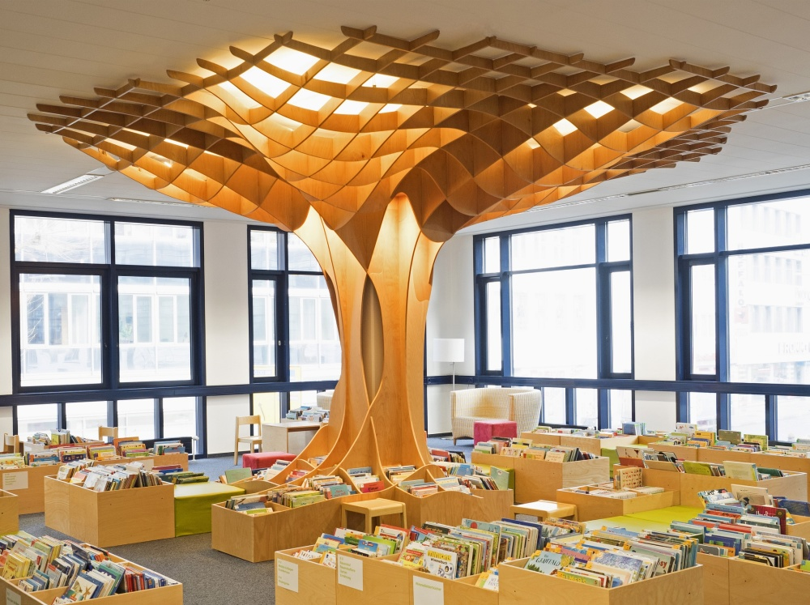

SEMANA 7
Séptima semana de clases
En esta clase aprendimos sobre el diseño paramétrico y el Metavers. Nos mostraron una página que hacer origamis en 3D digitalmente, la página es Origamisimulator.org. Con esta podías ver no solo formas de origamis sino que tambíen algunas bases de diseño paramétrico el cual puede ser inspiración para nuevas creaciones.
DISEÑO PARAMÉTRICO
Aplicando el concepto de que "El conocimiento es la base de todo" , la instalación más llamativa de la sección de libros infantiles de la Biblioteca Municipal de Saarbrücken representa este pensamiento utilizando el esqueleto de un árbol como protagonista. La idea era crear un espacio acogedor, donde esta obra de arte fuese el centro de la sala. El árbol, de forma libre y orgánica, esta compuesto por paneles de madera que se cruzan en ambos sentidos, generando un entramado que asemeja al follaje. El diseño de este maravilloso árbol fue creado con el software paramétrico, el cual permitió incorporar los aspectos básicos de la construcción real incluyendo materiales, tecnologías de fabricación y las propiedades estructurales en el proceso de diseño. Me encanta como realizaron la interpretación de su concepto, al ser una biblioteca siento que con ese diseño sí le da un estilo más acogedor y en parte iluminado que es lo que necesita una biblioteca .
COMENTARIO
Me encanta como realizaron la interpretación de su concepto, al ser una biblioteca siento que con ese diseño sí le da un estilo más acogedor y en parte iluminado que es lo que necesita una biblioteca .